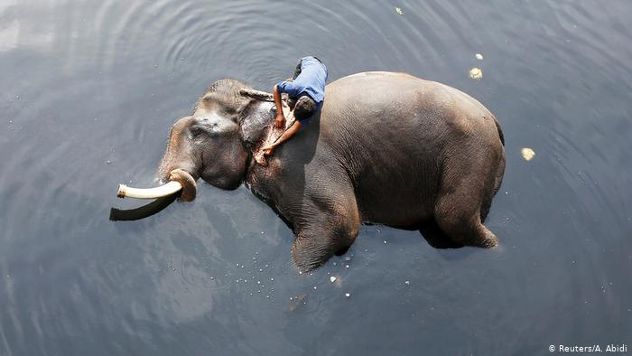

Fauna e Flora
São as agressões cometidas contra animais silvestres, nativos ou em rota migratória, como a caça, pesca, transporte e a comercialização sem autorização; os maus-tratos; a realização experiências dolorosas ou cruéis com animais quando existe outro meio, independente do fim. Também estão incluídas as agressões aos habitats naturais dos animais, como a modificação, danificação ou destruição de seu ninho, abrigo ou criadouro natural. A introdução de espécimes animal estrangeiras no país sem a devida autorização também é considerado crime ambiental, assim como a morte de espécimes devido à poluição.
Caça extermina a vida selvagem
A abundância de animais se reduz até 90% nos locais em que chegam os caçadores
Há selvas tão cheias de árvores quanto vazias de animais. A caça quase acabou com eles. Uma profunda revisão de artigos sobre o impacto das atividades de caça na biodiversidade dos bosques tropicais mostra que onde os caçadores chegam a abundância da vida animal se reduziu a 90%. A maior ou menor proximidade dos assentamentos humanos ou uma estrada determinam se uma selva estará vazia de vida. O estudo, realizado por um grupo de ecologistas liderado pela pesquisadora espanhola Ana Benítez, revisou 175 pesquisas anteriores realizadas desde 1970 que analisavam os efeitos da caça sobre a abundância da vida selvagem. O outro dado essencial buscado era medir o alcance em quilômetros do efeito, até onde chegava o impacto dos caçadores. Obtiveram dados de 254 espécies de mamíferos e 97 espécies de aves. O trabalho inclui a situação das florestas da América Latina, África Central e sudeste da Ásia e outros biomas tropicais, como a savana africana e o Cerrado amazônico.
Vídeo
Local mais comum que praticam a caça
Flora

São as agressões cometidas contra animais silvestres, nativos ou em rota migratória, como a caça, pesca, transporte e a comercialização sem autorização; os maus-tratos; a realização experiências dolorosas ou cruéis com animais quando existe outro meio, independente do fim. Também estão incluídas as agressões aos habitats naturais dos animais, como a modificação, danificação ou destruição de seu ninho, abrigo ou criadouro natural. A introdução de espécimes animal estrangeiras no país sem a devida autorização também é considerado crime ambiental, assim como a morte de espécimes devido à poluição.
Desmatamento na Amazônia cresce quase 30% entre agosto de 2018 e julho de 2019, diz Inpe
Área desmatada no período foi de 9.762 km². Levantamento é do sistema Prodes, do governo federal, que é o mais preciso para medir as taxas anuais de desmatamento.
Os dados são do Projeto de Monitoramento do Desmatamento na Amazônia Legal por Satélite (Prodes), considerado o mais preciso para medir as taxas anuais. Ele é diferente do Sistema de Detecção de Desmatamento em Tempo Real (Deter), que mostra os alertas mensais e já sinalizava tendência de aumento.
Entenda em 7 tópicos
Alta foi de 29,5% em 12 meses: área passou de 7.536 km² (agosto/17 a julho/18) para 9.762 km² (agosto/18 a julho/19); É a maior área desde 2008, quando o Prodes apontou 12.911 km² desmatados; Desde 2012, quando desmatamento foi de 4.571 km², o aumento anual vinha sendo de 11,4%, em média; Quatro estados respondem por 84% da floresta derrubada, sendo 40% no Pará; Segundo o Inpe, o nível de precisão do Prodes é de aproximadamente 95%; O ministro do Meio Ambiente, Ricardo Salles, diz que principal motivo do crescimento é prática de atividades econômicas ilegais; Pesquisadores e ONGs cobram fiscalização e nova postura do governo federal.
imagens aqui